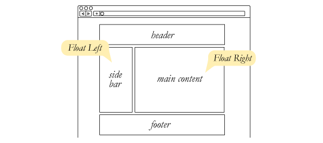

This box demostrate the Box Model. It has a max-width, margin-auto to center it, padding inside, and a rounded solid border. The background is a linear gradient
Here is a Custom link. Hover over it to see the color change, underline appear, and the cursor turn into a "help" icon

The gray box is position: relative. The colored boxes
inside are position: absolute. The blue box overlaps the
red box because it has a higher Z-Index.
(Scroll down to see fixed and sticky positionin in action)